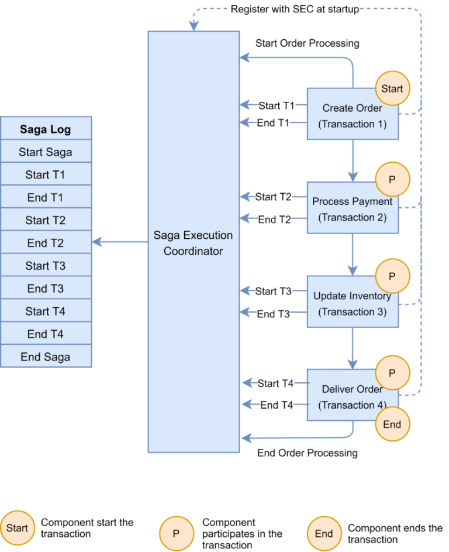
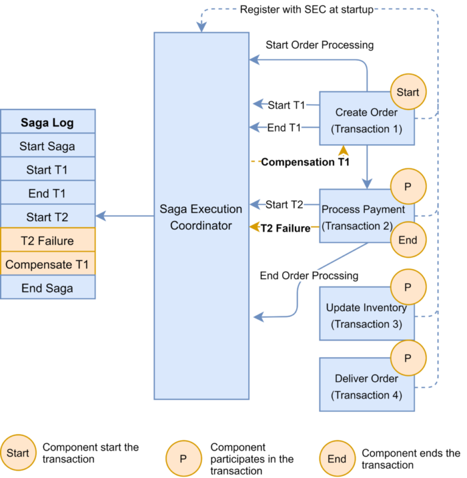
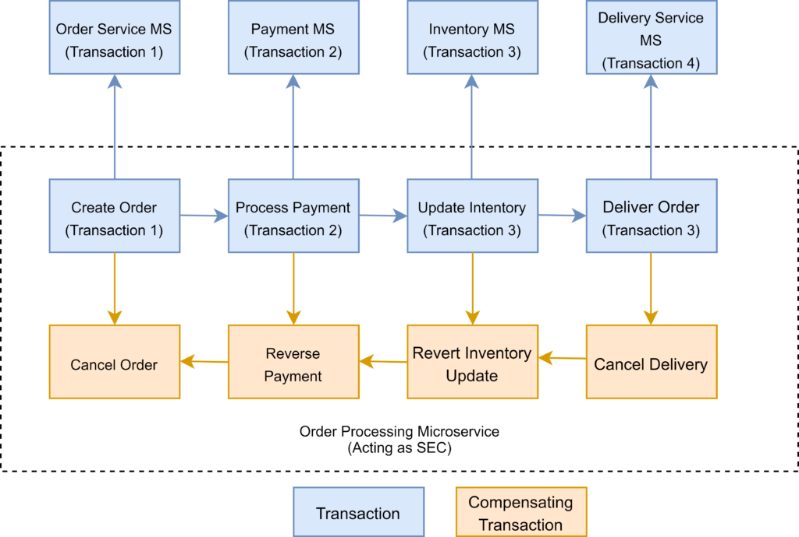

1. What is the Saga Pattern?
The Saga architecture pattern provides transaction management using a sequence of local transactions.
A local transaction is the unit of work performed by a Saga participant. Every operation that is part of the Saga can be rolled back by a compensating transaction. Further, the Saga pattern guarantees that either all operations complete successfully or the corresponding compensation transactions are run to undo the work previously completed.
In the Saga pattern, a compensating transaction must be idempotent and retryable. These two principles ensure that we can manage transactions without any manual intervention.
A saga is a sequence of local transactions. Each service in a saga performs its own transaction and publishes an event. The other services listen to that event and perform the next local transaction. If one transaction fails for some reason, the saga also executes compensating transactions to undo the impact of the preceding transactions.
- Distributed Transactions: Traditional ACID transactions don't work well in distributed systems. Sagas offer a flexible alternative.
- Resilience and Fault Tolerance: Handles failures gracefully by rolling back or compensating for completed steps, preventing inconsistencies.
- Data Consistency: Maintains consistency across multiple services without relying on a centralized transaction manager.
- Asynchronous Operations: Supports asynchronous communication between services, improving performance and scalability.
2. Why Use the Saga Pattern?
- Transactions Spanning Multiple Microservices: Essential for multi-service operations like order processing or booking systems.
- Long-Running Transactions: Ideal for operations that take time to complete, like user registration with email verification.
- Need for Resilience and Fault Tolerance: Crucial in systems where failures are expected and data consistency is paramount.
3. When to Use the Saga Pattern:
- Transactions Spanning Multiple Microservices: Essential for multi-service operations like order processing or booking systems.
- Long-Running Transactions: Ideal for operations that take time to complete, like user registration with email verification.
- Need for Resilience and Fault Tolerance: Crucial in systems where failures are expected and data consistency is paramount.
Let's see a simple example in a typical food delivery app flow.
When a user places an order, below could be the sequence of actions that happen.
- The food ordering service creates an order. At this point, the order is in a PENDING state. A saga manages the chain of events.
- The saga contacts the restaurant via the restaurant service.
- The restaurant service attempts to place the order with the chosen restaurant. After getting a confirmation, it sends back a reply.
- The saga receives the reply. And depending on the reply, it can approve the order or reject the order.
- The food order service then changes the state of the order. If the order was approved, it would inform the customer with the next details. If rejected, it will also inform the customer with an apology message.
As you can see, this is a pretty different approach from the usual point-to-point call approach in typical workflows.
4. Types of Sagas
There are two types of Sagas:
1. Choreography-Based Saga (decentralized coordination)
In this approach, there is no central orchestrator. Each service participating in the Saga performs their transaction and publish events. The other services act upon those events and perform their transactions. Also, they may or not publish other events based on the situation.
2. Orchestration-Based Saga (centralized control)
In this approach, there is a Saga orchestrator that manages all the transactions and directs the participant services to execute local transactions based on events. This orchestrator can also be though of as a Saga Manager.

The above diagram shows how to visualize the Saga pattern for the online order processing scenario.
5. Implementing Saga Choreography Pattern
In the Saga Choreography pattern, each microservice that is part of the transaction publishes an event that is processed by the next microservice.
To use this pattern, we need to decide if the microservice will be part of the Saga. Accordingly, the microservice needs to use the appropriate framework to implement Saga. In this pattern, the Saga Execution Coordinator is either embedded within the microservice or can be a standalone component.
In the Saga, choreography flow is successful if all the microservices complete their local transaction, and none of the microservices reported any failure.
The following diagram demonstrates the successful Saga flow for the online order processing application:
In the event of a failure, the microservice reports the failure to SEC, and it is the SEC’s responsibility to invoke the relevant compensation transactions:
In this example, the Payment microservice reports a failure, and the SEC invokes the compensating transaction to unblock the seat. If the call to the compensating transaction fails, it is the SEC’s responsibility to retry it until it is successfully completed. Recall that in Saga, a compensating transaction must be idempotent and retryable.
The Choreography pattern works for greenfield microservice application development. Also, this pattern is suitable when there are fewer participants in the transaction.
Here are a few frameworks available to implement the choreography pattern:
- Axon Saga – a lightweight framework and widely used with Spring Boot-based microservices
- Eclipse MicroProfile LRA – implementation of distributed transactions in Saga for HTTP transport based on REST principles
- Eventuate Tram Saga – Saga orchestration framework for Spring Boot and Micronaut-based microservices
- Seata – open-source distributed transaction framework with high-performance and easy-to-use distributed transaction services
6. Implementing Saga Orchestration Pattern
In the Orchestration pattern, a single orchestrator is responsible for managing the overall transaction status.
If any of the microservices encounter a failure, the orchestrator is responsible for invoking the necessary compensating transactions:
The Saga orchestration pattern is useful for brownfield microservice application development architecture. In other words, this pattern works when we already have a set of microservices and would like to implement the Saga pattern in the application. We need to define the appropriate compensating transactions to proceed with this pattern.
Here are a few frameworks available to implement the orchestrator pattern:
- Camunda is a Java-based framework that supports Business Process Model and Notation (BPMN) standard for workflow and process automation.
- Apache Camel provides the implementation for Saga Enterprise Integration Pattern (EIP).
7. Advantages and Disadvantages of SAGA Pattern
The main benefit of the Saga Pattern is that it helps maintain data consistency across multiple services without tight coupling. This is an extremely important aspect for a microservices architecture.
However, the main disadvantage of the Saga Pattern is the apparent complexity from a programming point of view. Also, developers are not as well accustomed to writing Sagas as traditional transactions. The other challenge is that compensating transactions also have to be designed to make Sagas work.
In my opinion, Sagas can help solve certain challenges and scenarios. They should be adopted or explored if the need arises. However, I would love to hear if others have also used Saga Pattern and how was the experience? What frameworks (if any) did you use?
|
Advantage of SAGA Pattern |
Disadvantage of SAGA Pattern |
| Provides better fault tolerance: With SAGA, if one step fails, the entire process can be rolled back or compensated without affecting other steps. | Increased complexity: Implementing SAGA requires additional coding and architecture to handle compensation and rollback steps. |
| Simplifies error handling: SAGA provides a clear and standardized way to handle errors and compensations, making it easier to debug and maintain. | Limited support: Not all frameworks or platforms support SAGA out of the box, which can make implementation more difficult. |
| Allows for asynchronous processing: SAGA can support asynchronous processing, allowing for greater concurrency and performance. | Requires careful design: The SAGA pattern requires careful design to ensure that the compensations and rollbacks are implemented correctly and can handle all possible failure scenarios. |
| Supports distributed transactions: SAGA can handle transactions across multiple services or databases, allowing for more scalable and distributed architectures. | Increased latency: SAGA may result in additional latency due to the need to coordinate between different services or databases. |